The Challenge
These days Artificial Intelligence and Machine Learning are all the craze, but have you ever wondered how in the world is it really possible to teach a machine to learn something, anything really, and become, well, artificially intelligent? In this project, using the context of one of the simplest children's games, Rock-Paper-Scissors, you are challenged to create a program that allows the machine to observe and learn from its user's game choices and quickly become intelligent enough to repeatedly beat the user at the game. Hard to believe? Get ready to surprise yourself.
Click "Connect Your App" below to start building your app or go directly to the Rock-Paper-Scissors with AI tutorial below.
Connect Your App
If you need help getting started and set up with App Inventor please visit
our Setting Up App Inventor page.
Rock-Paper-Scissors with AI (Level: Advanced)
Introduction
In this project you will catch a glimpse into how is it possible to program a machine to learn from its experiences and make "informed" decisions exhibiting intelligence. You will implement a Rock-Paper-Scissors game on your mobile device in which a user can play against the machine. The machine will keep track of the choices of the user and if a pattern emerges in the sequence of choices made by the user, the machine will exploit this knowledge to beat the user.
You can click on the images to enlarge them and click and drag the top frame of the enlarged images to move them around as needed.
Image Attribution: Free Icons Library
Rock Paper Scissors Icon #21623
The User Interface
Here is what the User Interface (UI) looks like. In the top row the scores are displayed. Underneath that there are three buttons that let the user pick a choice: Rock, Paper or Scissors. Next is the part where the user's and the computer's choices are displayed in words and with images. Then there is a label declaring the winner of a round of the game. The last part displays what is called a "Markov Transition Matrix", named after the Russian mathematician Andrey Markov, best known for his seminal work on probabilistic processes. You do not need to worry about this matrix now. Later in the tutorial you will learn the simple idea behind this 3X3 set of numbers. Note that coloring of the rows of the Matrix match the colors of the buttons for Rock, Paper and Scissors.
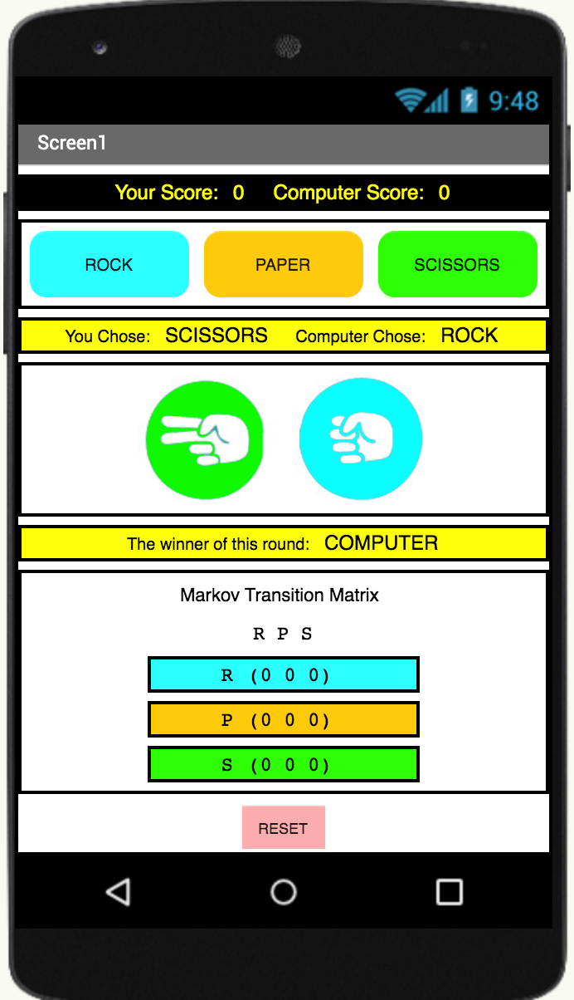The Components Hierarchy
The UI has already been created for you. You can see below the UI components and their corresponding place in the component hierarchy. Study this diagram and the naming scheme so that you will be able to follow the rest of the tutorial where you will give functionality to the components.
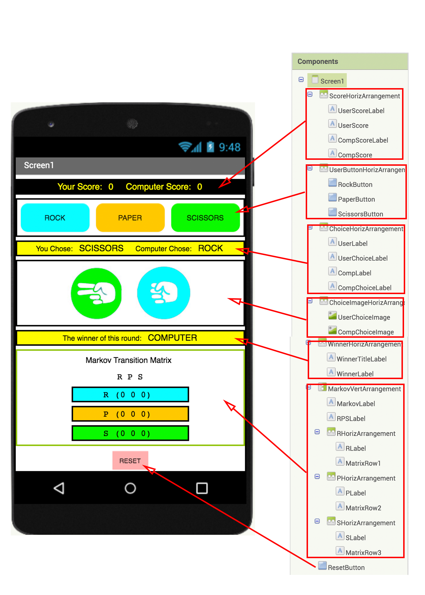Machine Learning using a Markov Process
Here is the basic idea behind how you will endow the machine an ability to learn from experience. The machine will keep track of the sequence choices that the user makes and record the frequency of consecutive user choices. The matrix that holds this information is called a "Markov Transition Matrix".

On the left side, the rows of the matrix denote the user's previous choice and, at the top, the columns denote the user's follow up choice. The cells contain information about how frequently a particular sequence of consecutive choices were made. For example, in the Matrix shown above you can see that 7 times the user followed her choice of Rock with another choice of Rock, 13 times she followed her choice of Rock with Paper, 11 times she followed her choice of Paper with Scissors, 3 times she followed her choice of Scissors with another choice of Scissors, etc.
Machine Learning using a Markov Process
The diagram below with a highlighted second row (in red) shows the count of how many times the user's choice of Paper was followed with a choice of Rock, Paper or Scissors (2, 4, 11 respectively.)
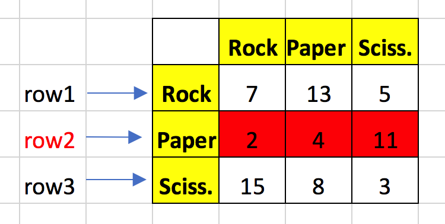Machine Learning using a Markov Process
The diagram below with a highlighted second column (in green) shows the count of how many times the user's choice of Paper was preceded with a choice of Rock, Paper or Scissors (13, 4, 8 respectively.)
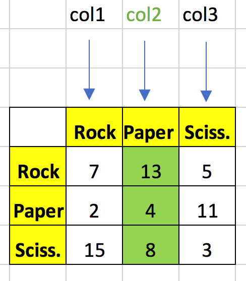Machine Learning using a Markov Process
The orange cell in the middle of the Matrix below shows the intersection of the second row with the second column and the number 4 in the orange cell is the count of the number of times the user followed her choice of Paper with another Paper.
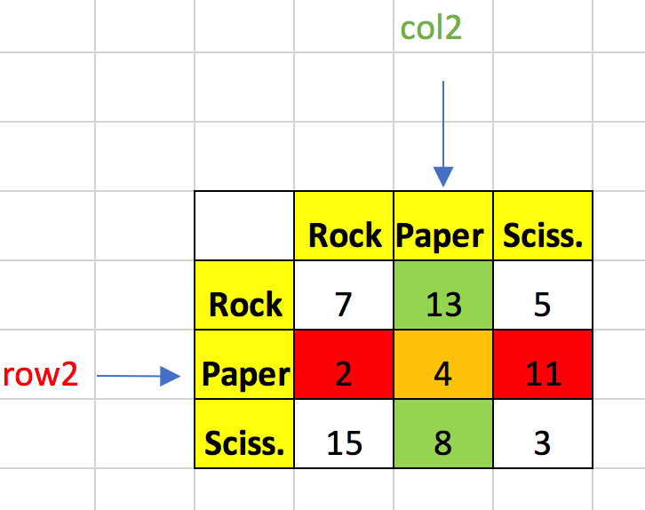Building and Incrementing the Markov Matrix
At the start of a game Markov Matrix's entries are all zeroes.
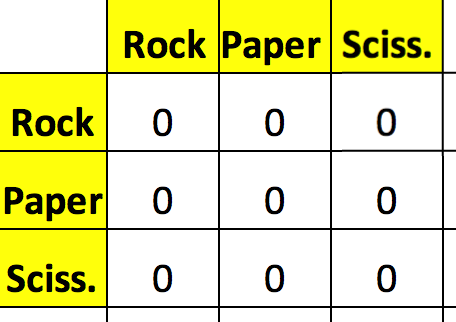Suppose the user played Rock first and then followed this with Paper (i.e. the consecutive choice sequence was Rock, Paper). Then, the cell in the first row (Rock) and second column (Paper) needs to be incremented as shown from a zero to a one.
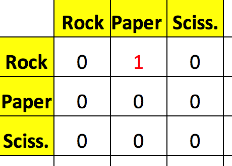Suppose then the user followed her last choice of Paper with Scissors (i.e. the sequence of choices was Rock, Paper, Scissors) then the cell in the second row (Paper) and third column (Scissors) needs to be incremented as shown.
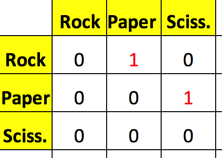You can think of the Matrix as a record of the game choices of the user studied in pairs:
- User choices in order:
Rock, Paper, Scissors - First group the first two consecutive choices:
(Rock, Paper), Scissors - Then group the second two consecutive choices:
Rock, (Paper, Scissors)
Practice with Markov Matrix
Suppose the game continues and at one instant you get the following matrix that keeps track of consecutive user moves.
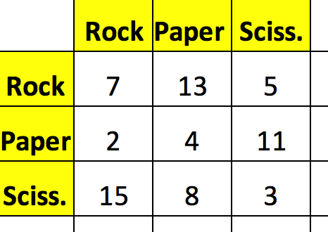Say, then, the user followed her last move of Paper with another Paper. How would you increment the appropriate entry of this matrix?
Practice with Markov Matrix
Suppose the game just started and the Matrix is as shown:
Suppose then the following sequence of choices is made by the user:
Rock, Scissors, Scissors, Paper
What would the Markov Matrix look like at that point in the game?
Smart Choice Using the Markov Matrix
Now that you understand how the app will keep track of the user's choices, consider the following scheme on how the app can "intelligently" decide its own next choice. Say this is the Markov Matrix at some point in the game:
and the user's last choice was Scissors. Then according to "historical" record, the machine knows that user followed Scissors 15 times with Rock, 8 times with Paper and only 3 times with Scissors. So, it is most likely that the user will follow her last move of Scissors with Rock. So, what is the smart thing for the machine to do? To beat the most probable choice of Rock by the user, the machine will need to choose ... *Paper*. Aha!
These examples should give you a sense of how the machine tracks consecutive user choices and, based on existing patterns, makes "informed" decisions about how most likely it may be able to beat the user.
Blocks Editor
Now you will give functionality to the User Interface (UI) and endow the machine with intelligence. Switch to the Blocks editor.

Initializations
- Create a variable called choices which will eventually contain the list of possible choices (ROCK, PAPER, SCISSORS) and for now initialize it to an empty list.
- Create a variable called beatingChoices which will eventually contain the list of possible beating choices (PAPER, SCISSORS, ROCK) and for now initialize it to an empty list. The order given is so because: Paper beats Rock, Scissors beats Paper and Rock beats Scissors. 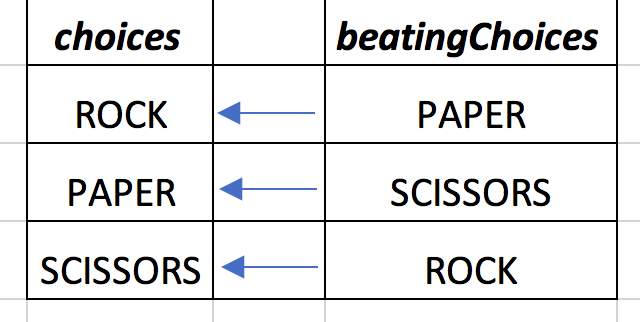
- Create variables ROCK, PAPER and SCISSORS and initialize them to the numbers 1,2 and 3 respectively. Assigning numbers to the choices will allow you to easily navigate indices of various lists and update the Markov Matrix at the end of each round of the game.
Initializations
- Create a variable called choicesInWords and initialize it to hold a list containing the words "ROCK", "PAPER" and "SCISSORS". Please note that "ROCK" is a string of characters whereas ROCK is a variable that holds the numerical value 1. Similar for other choices.
- Create a variable called buttonChoices and initialize it to hold a list of the button components that the user can press: RockButton, PaperButton and ScissorsButton. (Review the names of the UI elements if you need to remind yourself these names.) Note that these are not the words "RockButton", etc. but rather the actual components RockButton, etc. 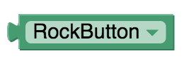
Initializations
- Create a variable called imageChoices and initialize it to hold a list of the names of the PNG images stored as Media files: "rock.png", "paper.png", "scissors.png".
- Create a variable called MarkovTransitionMatrix and initialize it to an empty list. You will later create a procedure to make this variable hold a list of lists.
- Create two variables called lastUserChoice and currentUserChoice which will keep track of the last two consecutive choices made by the user and initialize them to zero.
- Create a variable called currentComputerChoice which will keep track of the current choice made by the computer and initialize it to zero.
Matrix Procedures
Create two procedures without return values that you will use for the Markov Matrix:
- For creating a procedure without a return value choose the one on the left. 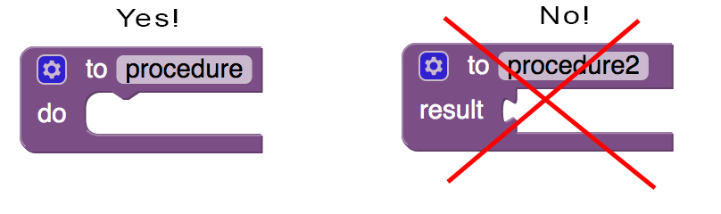
- Create a procedure called initializeMarkovMatrix and have it set the variable MarkovTransitionMatrix to a list of three lists, each containing three zeros as elements. This will be equivalent to initializing the 3X3 Markov Matrix's entries to zeros.
- Create a procedure called printMatrix, which will write each row of the MarkovTransitionMatrix to labels MatrixRow1, MatrixRow2, MatrixRow3 respectively. 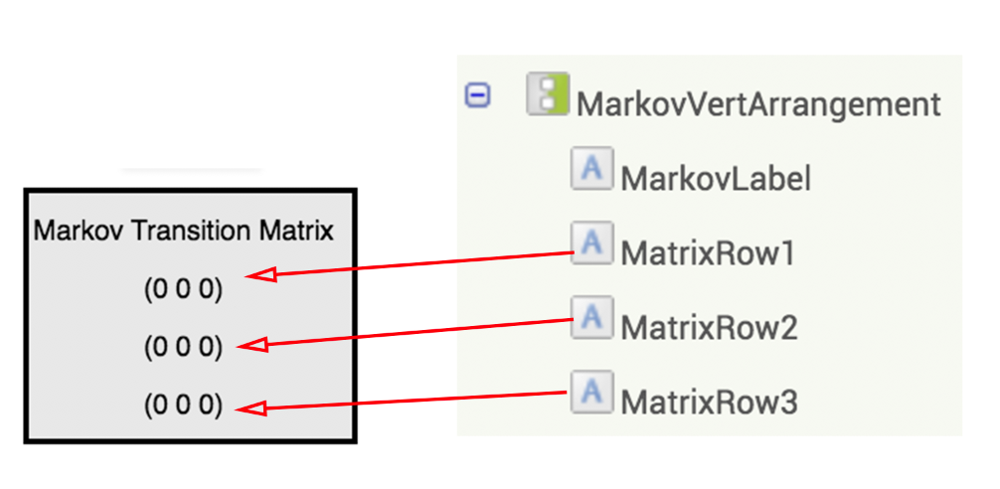
Note that when a list is printed to a label MIT App Inventor automatically puts the open/close parenthesis i.e . "(" and ")" .
Screen1 Initialization
When Screen1 initializes:
- call the procedure initializeMarkovMatrix;
- set the variable choices to a list containing the variables ROCK, PAPER and SCISSORS (in this order). (Remember that these variables hold the values 1,2, and 3 respectively);
- set the variable beatingChoices to the list containing the variables PAPER, SCISSORS and ROCK (in this order);
Continued on the next page...
Screen1 Initialization
When Screen1 initializes:
- set the variable lastUserChoice to the variable ROCK. Note that this choice is completely arbitrary and allows the Markov Matrix to be built immediately following the first choice made by the user instead of waiting two rounds, which leads to a slightly more complex programming code;
Do this coding on your own. If you get stuck and would like some hints, click on the hint button below.
Note: This is a subtle point but in case you are wondering why you did not simply initialize the list holding variables choices and beatingChoices using the ROCK, PAPER and SCISSORS variables at the very beginning when you initialized all the other variables, the reason is that the ROCK, PAPER and SCISSORS variables needed to be initialized first prior to being used in defining other variables.
Collapsing Code Blocks
In this project you will do quite a bit of coding and you may benefit from right-clicking on long blocks of code and collapsing them in order to have more work space and to better organize your code, as shown below.
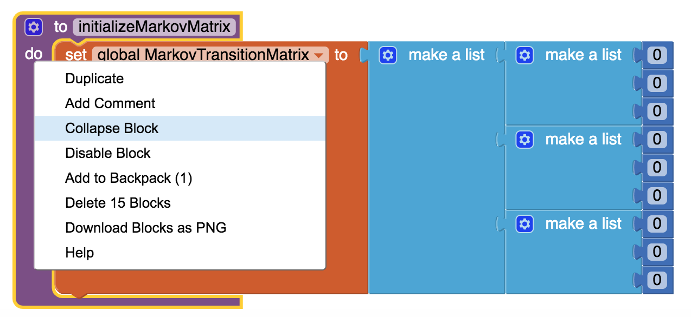
Reset Button
When the ResetButton is clicked:
- call the procedure initializeMarkovMatrix;
- call the procedure printMatrix to show the 3X3 Matrix entries initialized to zeros;
- set the user and computer scores to zero;
- reset the winner announcement label, the user and computer choice announcement labels to "NONE";
- set the variable lastUserChoice to the variable ROCK, just like at the initialization;
- set the variable currentUserChoice to zero, just like at the initialization.
Do this coding on your own. If you get stuck and would like some hints, click on the hint button below.
randomChoice and smartChoice
Create two procedures with a return value as blocks but leave them blank without any code for now. The first procedure, randomChoice, will have the computer randomly make a choice of ROCK, PAPER or SCISSORS (at the start of the game) and the second procedure, smartChoice, will make an "informed" choice after studying the Markov Matrix. You will fill in the code for these procedures later in the tutorial.
For creating a procedure with a return value choose the one on the right.
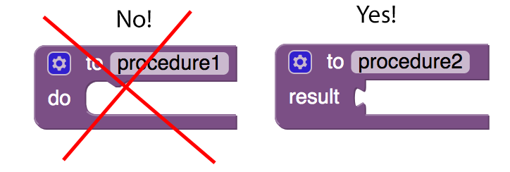Update Procedures
Create two procedures without a return value as blocks but leave them blank without any code for now. The first procedure, updateWinnerScore, will increment the score of the winner of a given round of the game. The second procedure, updateMatrix, will update the Markov Matrix at the end of each round of the game.
For creating a procedure without a return value choose the one on the left.
User Choice Buttons
You will now handle the RockButton, PaperButton and ScissorsButton click events. Since they all behave the same way, it makes sense to use the Any Component feature of App Inventor.
When any Button is clicked by the user:
- You already handled the ResetButton click event, so deal only with button clicks not already handled;
- if currentUserChoice is zero (which means that this is the start of the game)
- set currentComputerChoice to the value returned by the procedure randomChoice;
- else set currentComputerChoice to the value returned by the procedure smartChoice;
Continued on the next page ...
User Choice Buttons
When any Button is clicked by the user:
- set the ComputerChoiceImage picture and ComputerChoiceLabel text using the variable currentComputerChoice as index for imageChoices and choicesinWords respectively;
- set currentUserChoice variable according to the button the user has pressed. We set this variable only now after the computer makes it choice because the computer cannot make its decision based on what the user just chose -it would be cheating- but only based on the user's past choices.
- set the UserChoiceImage picture and UserChoiceLabel text using the variable currentUserChoice as index for imageChoices and choicesinWords respectively;
- call the procedure (without a return value) updateWinnerScore which will increment the score of the winner of a given round of the game.
- call the procedure (without a return value) updateMatrix to update the Markov Matrix.
- finally set lastUserChoice to currentUserChoice so that the game is ready for the next round.
Do this coding on your own. If you get stuck and would like some hints, click on the hint button below.
randomChoice
Now you will fill in the code for the procedures you created above.
Complete the procedure randomChoice with a return value:
- have the procedure return a randomly chosen item from the choices list (containing ROCK, PAPER, SCISSORS).
Do this coding on your own. If you get stuck and would like some hints, click on the hint button below.

smartChoice
Complete the procedure smartChoice with a return value:
- Create another procedure with a return value to be called within the smartChoice procedure and name it findMostLikelyNextUserChoice but leave it blank without code for now. You will fill in the code later.
For creating a procedure with a return value choose the one on the right.
This procedure will return the most likely choice that the user will make based on the computer's assessment of the Markov Matrix which keeps track of historical data about the user's previous sequence of consecutive choices. - have the smartChoice procedure return the element from the beatingChoices list using the value returned by findMostLikelyNextUserChoice as the index into the list.
Do this coding on your own. If you get stuck and would like some hints, click on the hint button below.
Updating Scores
Complete the procedure updateWinnerScore as follows:
- if the computer’s choice beats the user’s choice, increment the computer’s score and announce the computer as the winner;
- else if the user’s choice beats the computer’s choice, increment the user’s score and announce the user as the winner;
- else (i.e. neither beats the other) no one’s score needs to be incremented but announce that no one is a winner.
Do this coding on your own. If you get stuck and would like some hints, click on the hint button below.
Updating the Markov Matrix
Complete the procedure updateMatrix as follows:
- increment the appropriate Markov Matrix cell by 1, based on lastUserChoice and currentUserChoice as row and column.
- call the procedure printMatrix to ensure that the Matrix update is displayed in the app.
Do this coding on your own. If you get stuck and would like some hints, click on the hint button below.
Finding the Most Likely Next User Choice
Finally, you will complete the procedure findMostLikelyNextUserChoice whose return value will be used as the index into beatingChoices in the smartChoice procedure.
Note that this procedure has to return a value i.e. the choice (ROCK, PAPER, SCISSORS: 1,2,3 respectively) that the computer estimates to be most likely to be made by the user. Make sure that you choose the appropriate type of procedure block returning a result.
Look at the last choice made by the user (ROCK, PAPER, SCISSORS: 1,2,3 respectively) and then with this as the row index, you need to examine the appropriate row of the Markov Matrix to decide which column has the entry with the highest frequency stored in it. For example, if the last choice made by the user was PAPER, you would examine the second row (in red) and you would return SCISSORS (i.e. the column index of 3, which has the largest value of 11 in that row) as the most likely next user choice.
Follow the steps described on the next pages.
Finding the Maximum in a Row
To simplify the procedure findMostLikelyNextUserChoice first create a simple helper procedure called maxInRow to find the maximum element in a given row of the Markov Matrix.
Do this coding on your own. If you get stuck and would like some hints, click on the hint button below.
Finding the Most Likely Next User Choice
Complete the procedure (with a return value) findMostLikelyNextUserChoice:
- find the row of the Markov Matrix determined by the lastUserChoice;
- use the procedure maxInRow to find the maximum entry in this row and return the index of that value in the row (1,2 or 3).
Do this coding on your own. If you get stuck and would like some hints, click on the hint button below.
Test Your App
Now test your app thoroughly to make sure that:
- the user is able to click the buttons to make her choices;
- the Markov Matrix updates correctly with each user click, recording the frequency of consecutive pairs of user choices;
- the machine is able to randomly make a choice for the first round and thereafter is guided by the information available in the Markov Matrix and makes smart choices;
- the user and computer scores update correctly;
- the machine responds appropriately if the user always makes the same choice, like, Rock, Rock, Rock,....
- For repeated user choices of Rock, does the machine quickly learn to respond with repeated choices of Paper?
- What happens when the user only chooses Paper or only chooses Scissors?
Test Your App Further
- Try testing the machine's response to more complex patterns chosen by the user:
- Rock, Paper, Rock, Paper, Rock, Paper........
- Paper, Scissors, Paper, Scissors, Paper, Scissors.......
- Rock, Paper, Scissors, Rock, Paper, Scissors, Rock, Paper, Scissors ....
- Try to beat the machine. In a game of 30 rounds what is the best you can do?
Test Your App Further
- Can you beat the machine using its own strategy? That is, can you anticipate how the machine will try to beat you according to the current state of the Markov Matrix and use this knowledge in return to beat the machine at that round? For example, if this is the Markov Matrix at some point in the game and, say, your last choice as the user was Rock,
then, the machine will anticipate your choosing Paper next (as the entry with 13 is the largest in the first row) and thus will try to beat you with a Scissors. However, with this extra knowledge you can now "surprise" the machine by choosing Rock to beat the machine using its own strategy.- How far can you play using this strategy?
- Can you always beat the machine by looking at the Markov Matrix?
- If you play this game in this manner for a long time, what do you expect will happen to the Markov Matrix? Can you verify your hypothesis?
Congratulations! Celebrate, as you have just created your first example of Machine Learning and Artificial Intelligence!
Expand Your App
- Create a button (perhaps instead of MarkovLabel) to show and hide the Markov Matrix information so that the decision process of the machine can be hidden from the user.
- What other Machine Learning schemes can you think of? How would you implement these ideas?
- The Machine Learning algorithm you implemented in this project is an example of a "classical" Artificial Intelligence algorithm (i.e. "classical" as in the sense of "not modern"). It is domain specific (i.e. only applies to the Rock-Paper-Scissors game) and it implements a particular strategy for the game. Do some research about Neural Networks to learn about more modern approaches to Machine Learning. Pay special attention to the "supervised" versus "unsupervised" approaches to Machine Learning.
- Watch the movie AlphaGo which documents the amazing story of the Machine Learning algorithm AlphaGo, developed by Google's DeepMind team, that in 2016 managed to beat Lee Sedol, the world champion of the board game Go.
- Do some research about AlphaGo Zero. How is it different than and superior to AlphaGo?
About Youth Mobile Power
A lot of us spend all day on our phones, hooked on our favorite apps. We keep typing and swiping, even when we know the risks phones can pose to our attention, privacy, and even our safety. But the computers in our pockets also create untapped opportunities for young people to learn, connect and transform our communities.
That’s why MIT and YR Media teamed up to launch the Youth Mobile Power series. YR teens produce stories highlighting how young people use their phones in surprising and powerful ways. Meanwhile, the team at MIT is continually enhancing MIT App Inventor to make it possible for users like you to create apps like the ones featured in YR’s reporting.
Essentially: get inspired by the story, get busy making your own app!

The YR + MIT collaboration is supported in part by the National Science Foundation. This material is based upon work supported by the National Science Foundation under Grant No. (1906895, 1906636). Any opinions, findings and conclusions or recommendations expressed in this material are those of the author(s) and do not necessarily reflect the views of the National Science Foundation.
Check out more apps and interactive news content created by YR here.